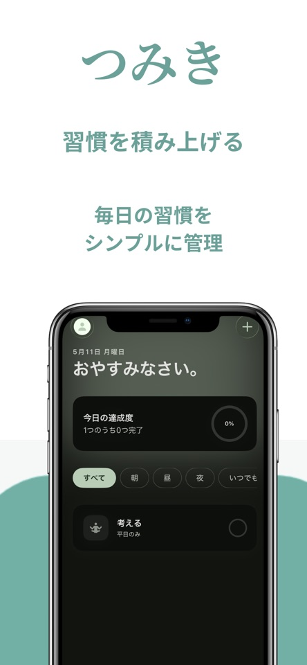

まずは、ひとつだけ
テンプレートから選んでも、自分の名前をつけても。曜日や時間帯を決めて、生活に合った習慣を登録できます。
小さくはじめる、習慣トラッカー
本を1ページ読む。朝、体を伸ばす。
つみきは、そんな小さな「できた」を
ワンタップで積み重ねる習慣アプリです。
iPhone / iOS 18.0以降 · 3つの習慣まで無料

今日も、ひとつ積めた。
毎日の記録を、軽やかに
大きな目標より、今日できる小さな一歩から。
記録の手間を減らして、習慣そのものに時間を使えます。
テンプレートから選んでも、自分の名前をつけても。曜日や時間帯を決めて、生活に合った習慣を登録できます。
毎回の長い入力は不要。Siriやコントロールセンターからの記録にも対応しています。
連続日数や直近30日のカレンダーで、日々の記録を確認。節目にはマイルストーンの演出もあります。
あなたの毎日なら？
最初の目標の決め方と、つみきでの設定例をまとめました。
無料で試して、必要になったら
まずは毎日の記録を試してください。プレミアムに月額・年額の継続課金はありません。
まずはここから
¥0 / 習慣は3つまで
買い切り / 一度の購入
価格はApp Storeまたはアプリ内の購入画面でご確認ください。
掲載機能は日本のApp Store公開版v1.8を基準にしています（2026年9月22日確認）。最新の対応環境・価格はApp Storeをご確認ください。
はじめる前に
はい。習慣は3つまで登録でき、記録・曜日設定・通知・Siriなどの基本機能を無料で使えます。プレミアムの購入は任意です。
はい。毎日・平日・カスタムの曜日スケジュールを設定できます。続けたいペースに合わせて選んでください。
アカウント登録は不要です。習慣や完了履歴は端末内に保存されます。詳しくはプライバシーポリシーをご確認ください。
現在はiPhone用アプリです。対応するiOSバージョンなどの最新情報はApp Storeをご確認ください。
購入の復元と習慣データの復元は異なります。注意点とお問い合わせ先をサポートページにまとめています。
今日の一歩を、ここから
続けたいことが、ひとつあれば十分です。
App Storeで無料ではじめる3つの習慣まで無料 · アカウント登録なし